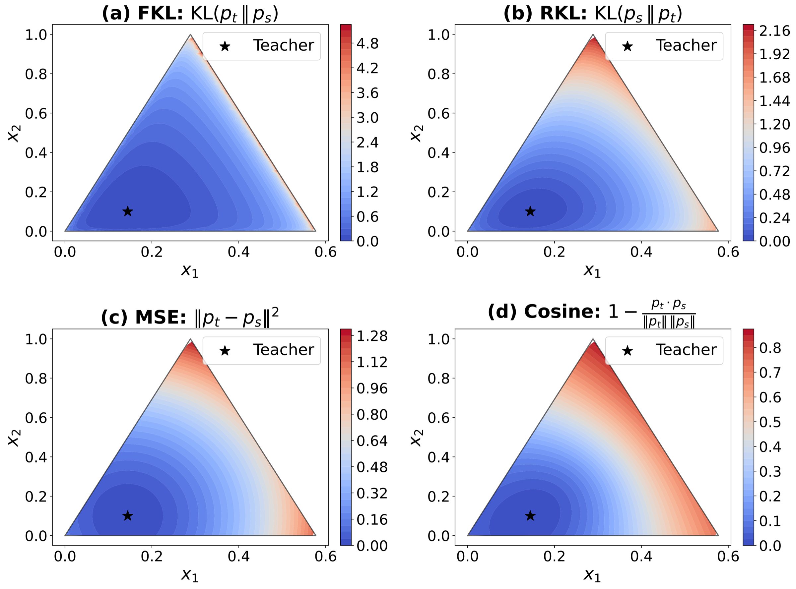
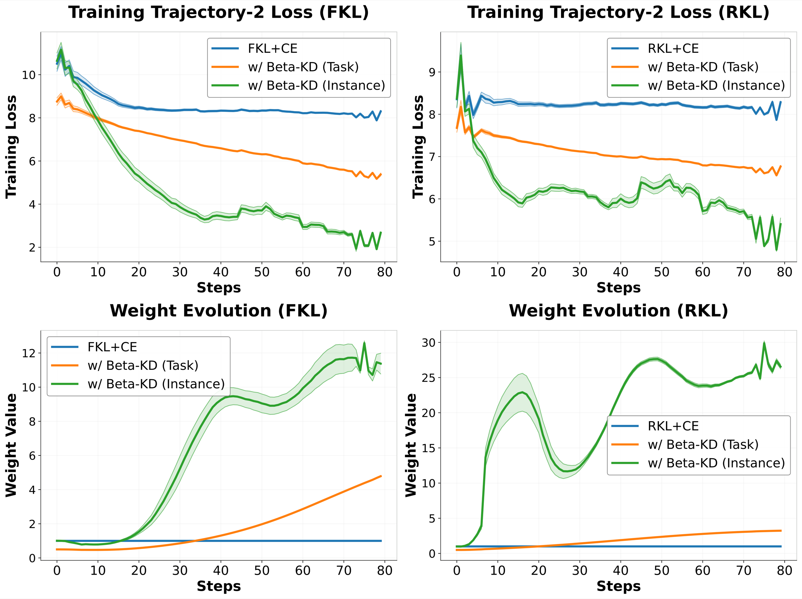
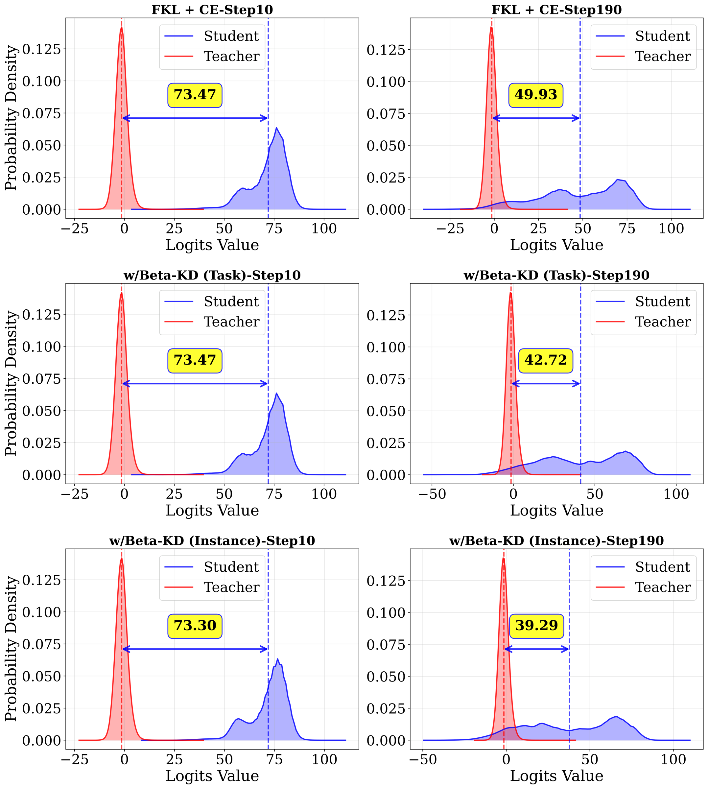
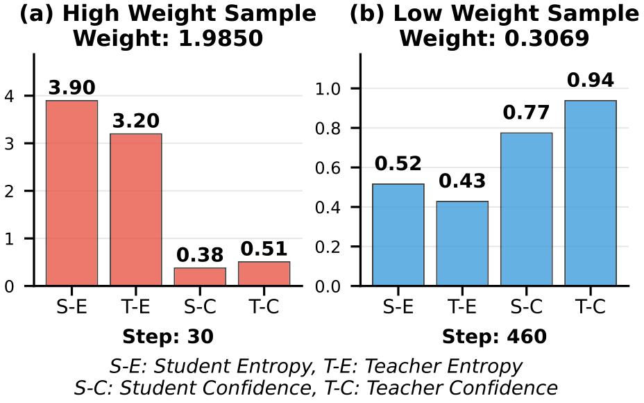

Abstract
Knowledge distillation establishes a learning paradigm that leverages both data supervision and teacher guidance. However, determining the optimal balance between learning from data and learning from the teacher is challenging, as some samples may be noisy while others are subject to teacher uncertainty. This motivates the need for adaptively balancing data and teacher supervision. We propose Beta-weighted Knowledge Distillation (Beta-KD), an uncertainty-aware distillation framework that adaptively modulates how much the student relies on teacher guidance. Specifically, we formulate teacher–student learning from a unified Bayesian perspective and interpret teacher supervision as a Gibbs prior over student activations. This yields a closed-form, uncertainty-aware weighting mechanism and supports arbitrary distillation objectives and their combinations. Extensive experiments on multimodal VQA benchmarks demonstrate that distilling student Vision-Language Models from a large teacher VLM consistently improves performance. The results show that Beta-KD outperforms existing knowledge distillation methods.
Highlights
Bayesian view of KD
Teacher signals act as a Gibbs prior over student activations. KD training is MAP inference for those activations, done by amortized neural inference.
Closed-form weighting
A Laplace approximation gives task- and instance-level uncertainty weights \(\beta\). No grid search over loss weights is needed.
Consistent gains
Up to +4.7 on ScienceQA and +2.0 average across six VQA benchmarks, at under 0.01% extra training time.
Method
Teacher-informed Gibbs prior. We treat the teacher–student discrepancy \(\ell(a^s; a^t)\) as an energy. Here \(a^s\) is a student activation (features, logits or probabilities) and \(a^t\) is the matching teacher signal. Lower energy means higher probability, and the concentration \(\beta\) sets how strongly the student is pulled toward the teacher:
$$p(a^s \mid a^t, \beta) = \frac{1}{Z_\beta(a^t)} \exp\!\big[-\beta\,\ell(a^s; a^t)\big], \qquad \beta > 0.$$MAP of student activation. We assume the teacher affects the output \(y\) only through the student, i.e. \(y \perp (a^t, \beta) \mid a^s\). MAP inference then recovers the familiar CE + KD objective, plus a partition-function term:
$$\min_{a^s}\; \underbrace{-\log p(y \mid a^s)}_{\text{Cross-Entropy}} \;+\; \beta\,\underbrace{\ell(a^s; a^t)}_{\text{Distillation}} \;+\; \log Z_\beta(a^t).$$Laplace approximation. A second-order expansion around the energy minimizer makes \(Z_\beta\) tractable. It also adds a \(-\tfrac{d}{2}\log\beta\) term that keeps \(\beta\) from diverging:
$$\min_{a^s}\; -\log p(y \mid a^s) \;+\; \beta\,\ell(a^s; a^t) \;-\; \frac{d}{2}\log\beta.$$Amortized optimization on \(\beta\). We learn \(\beta\) jointly with the student instead of solving for it per sample. With task-level (homoscedastic) uncertainty, \(\beta_k\) is a learnable scalar for each loss. With instance-level (heteroscedastic) uncertainty, a lightweight network predicts \(\beta(x) = g_\phi(h(x)) > 0\) from each input:
$$\min_{\theta,\phi}\; \mathcal{L}_{\mathrm{CE}}(\theta) \;+\; g_\phi(h(x))\,\ell(\theta) \;-\; \frac{d}{2}\log g_\phi(h(x)).$$
Energy functions. Four representative distillation losses visualized in the probability simplex. Beta-KD works with any of them, from KL variants (FKL, RKL) to MSE and Cosine distance.
Experimental Results
The teacher is MobileVLM V2 7B and the student is MobileVLM V2 1.7B. Only the language backbone is fine-tuned. For the six-benchmark results, the transfer set is scaled to 2.2M image–text pairs.
Results on six multimodal benchmarks
| Method | LLM | #Samples | MMEP | MMEA | GQA | VQAT | POPE | MMBdev | SQAI | Avg. |
|---|---|---|---|---|---|---|---|---|---|---|
| LLaVA-1.5 | Vicuna-7B | 1.2M | 1510.7 | 75.5 | 62.0 | 58.2 | 85.9 | 64.3 | 66.8 | 68.8 |
| ShareGPT4V | Vicuna-7B | 1.9M | 1567.4 | 78.4 | 63.3 | 60.4 | 85.7 | 68.8 | 68.4 | 70.8 |
| MobileVLM V2 7B | Vicuna-7B | 3.6M | 1559.0 | 78.0 | 62.6 | 62.3 | 86.6 | 69.2 | 74.7 | 72.2 |
| MoE-LLaVA-2B | Qwen-1.5-1.8B | 2.2M | 1292.0 | 64.6 | 61.5 | 48.0 | 87.0 | 59.7 | 63.1 | 64.0 |
| MoE-LLaVA-1.6B | StableLM-1.6B | 2.2M | 1300.0 | 65.0 | 60.4 | 47.8 | 84.3 | 59.4 | 62.6 | 63.3 |
| MobileVLM 3B | MobileLLaMA 2.7B | 3.6M | 1288.9 | 64.4 | 59.0 | 47.5 | 84.9 | 59.6 | 61.2 | 62.8 |
| MobileVLM 1.7B | MobileLLaMA 1.4B | 3.6M | 1196.2 | 59.8 | 56.1 | 41.5 | 84.5 | 53.2 | 57.3 | 58.7 |
| MobileVLM V2 1.7B | MobileLLaMA 1.4B | 3.6M | 1246.3 | 62.3 | 55.1 | 51.2 | 85.3 | 57.6 | 63.2 | 62.5 |
| LLAVADI | MobileLLaMA 1.4B | 3.6M | 1178.6 | 58.9 | 55.4 | 45.3 | 84.7 | 55.0 | 56.0 | 59.2 |
| Align-KD | MobileLLaMA 1.4B | 3.6M | 1288.9 | 64.4 | 60.0 | 52.8 | 85.4 | 57.0 | 61.0 | 63.4 |
| w/ Beta-KD (Task) | MobileLLaMA 1.4B | 3.6M | 1315.1 +26.3 | 65.8 +1.3 | 60.2 +0.2 | 52.9 +0.1 | 85.4 +0.0 | 58.8 +1.8 | 61.4 +0.4 | 64.1 +0.6 |
| w/ Beta-KD (Instance) | MobileLLaMA 1.4B | 3.6M | 1343.0 +54.1 | 67.1 +2.7 | 60.8 +0.8 | 53.9 +1.1 | 85.4 +0.0 | 59.1 +2.2 | 61.2 +0.2 | 64.6 +1.2 |
| Cosine KD | MobileLLaMA 1.4B | 3.6M | 1308.4 | 65.4 | 59.9 | 52.2 | 84.6 | 57.1 | 61.3 | 63.4 |
| w/ Beta-KD (Task) | MobileLLaMA 1.4B | 3.6M | 1352.0 +43.6 | 67.6 +2.2 | 60.8 +0.9 | 53.9 +1.7 | 85.4 +0.8 | 59.1 +2.0 | 61.2 −0.1 | 64.7 +1.2 |
| w/ Beta-KD (Instance) | MobileLLaMA 1.4B | 3.6M | 1350.3 +42.0 | 67.5 +2.1 | 61.2 +1.3 | 54.2 +1.9 | 86.6 +1.9 | 60.2 +3.1 | 63.1 +1.8 | 65.5 +2.0 |
MMEA is MMEP divided by 20 to match the scale of the other benchmarks. Avg. is computed over the six datasets. Align-KD is our reproduction. Cosine KD replaces the FKL loss in Align-KD with our probability-space Cosine distance. Beta-KD improves both variants and sets a new state of the art. The 1.7B student even beats larger models such as MobileVLM 3B and MoE-LLaVA-2B.
Two-loss balancing on ScienceQA (CE + KD)
| Method | VQA-Acc | IMG-Acc | Method | VQA-Acc | IMG-Acc | Method | VQA-Acc | IMG-Acc |
|---|---|---|---|---|---|---|---|---|
| CE + FKL | 48.2 | 54.7 | CE + JS | 48.5 | 54.8 | CE + CTKD | 48.6 | 55.0 |
| w/ Manual | 48.6 | 54.9 | w/ Manual | 49.4 | 56.3 | w/ Manual | 49.1 | 55.1 |
| w/ Beta-KD (Task) | 49.3 +0.7 | 55.3 +0.4 | w/ Beta-KD (Task) | 50.5 +1.1 | 58.1 +1.7 | w/ Beta-KD (Task) | 49.9 +0.8 | 55.3 +0.3 |
| w/ Beta-KD (Instance) | 51.8 +3.2 | 61.1 +6.2 | w/ Beta-KD (Instance) | 53.3 +3.9 | 66.9 +10.6 | w/ Beta-KD (Instance) | 53.8 +4.6 | 65.1 +10.0 |
| CE + RKL | 46.2 | 50.7 | CE + TVD | 49.1 | 53.1 | CE + MSE-Probs | 47.1 | 52.1 |
| w/ Manual | 47.8 | 53.5 | w/ Manual | 50.1 | 56.9 | w/ Manual | 49.3 | 56.1 |
| w/ Beta-KD (Task) | 49.5 +1.8 | 56.4 +3.0 | w/ Beta-KD (Task) | 51.3 +1.2 | 61.0 +4.1 | w/ Beta-KD (Task) | 51.7 +2.4 | 60.3 +4.2 |
| w/ Beta-KD (Instance) | 52.4 +4.6 | 61.6 +8.1 | w/ Beta-KD (Instance) | 52.0 +1.9 | 60.0 +3.1 | w/ Beta-KD (Instance) | 52.2 +2.9 | 62.4 +6.3 |
| CE + SFKL | 49.4 | 57.7 | CE + AdaptiveKL | 49.2 | 55.2 | CE + Cosine-Logits | 48.4 | 55.6 |
| w/ Manual | 51.1 | 60.4 | w/ Manual | 49.6 | 56.0 | w/ Manual | 50.7 | 59.3 |
| w/ Beta-KD (Task) | 53.1 +1.9 | 63.2 +2.9 | w/ Beta-KD (Task) | 50.2 +0.6 | 57.0 +1.0 | w/ Beta-KD (Task) | 53.1 +2.4 | 63.3 +3.9 |
| w/ Beta-KD (Instance) | 51.0 −0.1 | 60.0 −0.3 | w/ Beta-KD (Instance) | 54.2 +4.6 | 65.5 +9.5 | w/ Beta-KD (Instance) | 53.7 +3.0 | 64.9 +5.6 |
| CE + SRKL | 48.6 | 55.2 | CE + TAID | 46.2 | 49.3 | CE + Cosine-Probs | 51.6 | 59.1 |
| w/ Manual | 50.2 | 57.8 | w/ Manual | 50.1 | 56.7 | w/ Manual | 52.8 | 62.1 |
| w/ Beta-KD (Task) | 52.0 +1.8 | 60.7 +2.8 | w/ Beta-KD (Task) | 54.1 +4.0 | 64.4 +7.7 | w/ Beta-KD (Task) | 54.2 +1.4 | 65.3 +3.2 |
| w/ Beta-KD (Instance) | 54.3 +4.1 | 67.3 +9.5 | w/ Beta-KD (Instance) | 54.8 +4.7 | 65.9 +9.2 | w/ Beta-KD (Instance) | 54.9 +2.1 | 67.5 +5.5 |
Manual uses fixed weights set from the initial loss scales. Beta-KD (Task) learns one uncertainty weight per loss, shared across samples. Beta-KD (Instance) predicts a weight for each input. VQA-Acc covers all questions, and IMG-Acc covers only questions with image inputs. Gains are measured against Manual.
Show three-loss balancing on ScienceQA (CE + KD + FD)
| Method | VQA-Acc | IMG-Acc | Method | VQA-Acc | IMG-Acc | Method | VQA-Acc | IMG-Acc |
|---|---|---|---|---|---|---|---|---|
| CE + FKL + FD | 45.5 | 47.9 | CE + JS + FD | 48.4 | 53.2 | CE + MSE-Logits + FD | 46.4 | 51.1 |
| w/ Manual | 47.7 | 53.3 | w/ Manual | 48.9 | 53.7 | w/ Manual | 47.4 | 52.6 |
| w/ Beta-KD (Task) | 50.2 +2.5 | 59.1 +5.8 | w/ Beta-KD (Task) | 49.7 +0.8 | 54.6 +0.9 | w/ Beta-KD (Task) | 48.6 +1.2 | 54.5 +1.9 |
| w/ Beta-KD (Instance) | 52.9 +5.2 | 61.9 +8.6 | w/ Beta-KD (Instance) | 52.7 +3.8 | 62.3 +8.6 | w/ Beta-KD (Instance) | 51.3 +3.9 | 60.9 +8.3 |
| CE + RKL + FD | 50.3 | 56.5 | CE + TVD + FD | 49.7 | 55.1 | CE + MSE-Probs + FD | 48.2 | 54.0 |
| w/ Manual | 49.8 | 56.0 | w/ Manual | 51.8 | 59.7 | w/ Manual | 48.1 | 54.5 |
| w/ Beta-KD (Task) | 49.5 −0.3 | 55.8 −0.2 | w/ Beta-KD (Task) | 54.1 +2.4 | 64.7 +4.9 | w/ Beta-KD (Task) | 48.2 +0.1 | 55.3 +0.8 |
| w/ Beta-KD (Instance) | 50.1 +0.3 | 57.5 +1.5 | w/ Beta-KD (Instance) | 49.0 −2.8 | 56.8 −2.9 | w/ Beta-KD (Instance) | 47.1 −1.0 | 53.1 −1.4 |
| CE + SFKL + FD | 51.5 | 59.0 | CE + AdaptiveKL + FD | 47.4 | 51.5 | CE + Cosine-Logits + FD | 44.9 | 48.4 |
| w/ Manual | 51.3 | 59.1 | w/ Manual | 49.7 | 56.6 | w/ Manual | 48.1 | 55.0 |
| w/ Beta-KD (Task) | 51.4 +0.1 | 59.6 +0.5 | w/ Beta-KD (Task) | 52.3 +2.6 | 62.1 +5.4 | w/ Beta-KD (Task) | 51.5 +3.4 | 62.0 +6.9 |
| w/ Beta-KD (Instance) | 50.0 −1.3 | 59.1 −0.1 | w/ Beta-KD (Instance) | 49.5 −0.2 | 56.4 −0.2 | w/ Beta-KD (Instance) | 51.4 +3.3 | 60.1 +5.1 |
| CE + SRKL + FD | 48.3 | 52.4 | CE + TAID + FD | 48.3 | 54.4 | CE + Cosine + FD | 47.7 | 52.3 |
| w/ Manual | 49.4 | 55.1 | w/ Manual | 49.0 | 55.9 | w/ Manual | 49.4 | 56.9 |
| w/ Beta-KD (Task) | 50.9 +1.5 | 58.2 +3.1 | w/ Beta-KD (Task) | 50.0 +1.0 | 57.7 +1.8 | w/ Beta-KD (Task) | 51.3 +1.9 | 61.8 +4.9 |
| w/ Beta-KD (Instance) | 53.9 +4.5 | 63.3 +8.1 | w/ Beta-KD (Instance) | 53.2 +4.2 | 64.8 +8.9 | w/ Beta-KD (Instance) | 54.2 +4.8 | 64.8 +7.9 |
Each baseline combines cross-entropy, a KL-based distillation loss and a feature-level distillation (FD) objective. Gains are measured against Manual.
How Uncertainty Weighting Works

Faster, more stable optimization. Total training loss (top) and how the task- and instance-level weights \(\beta\) evolve (bottom) for FKL + CE and RKL + CE. Adapting \(\beta\) during training speeds up convergence and stabilizes optimization.

Closer teacher–student alignment. Teacher and student logit distributions early (Step 10) and late (Step 190) in training. Both Beta-KD variants shrink the logit matching distance compared with the baseline, and the instance-level variant aligns most closely.

Instance-level adaptivity. Early in training, student entropy is high and the student is uncertain. Beta-KD assigns the distillation loss a large weight (e.g. 1.98), so the student follows the teacher closely. As entropy falls and the student grows more confident, the weight drops (e.g. 0.3) and the student relies more on its own predictions.